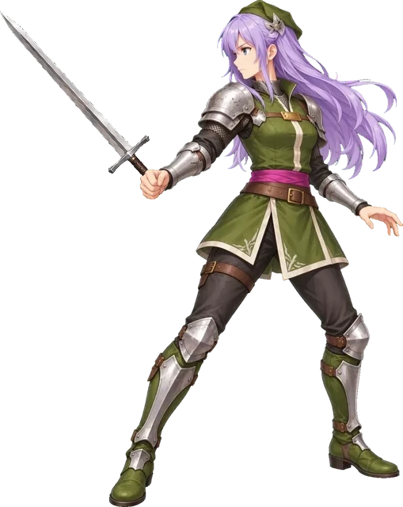
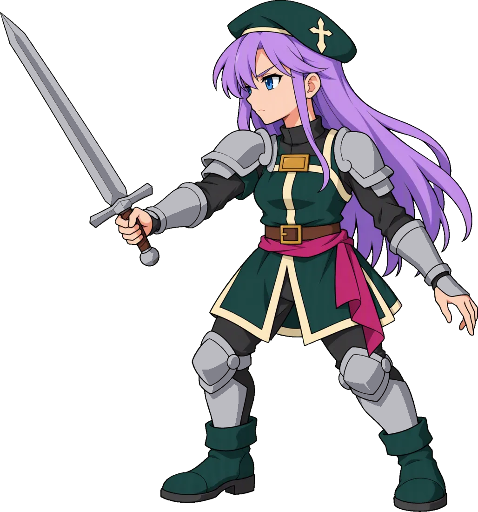
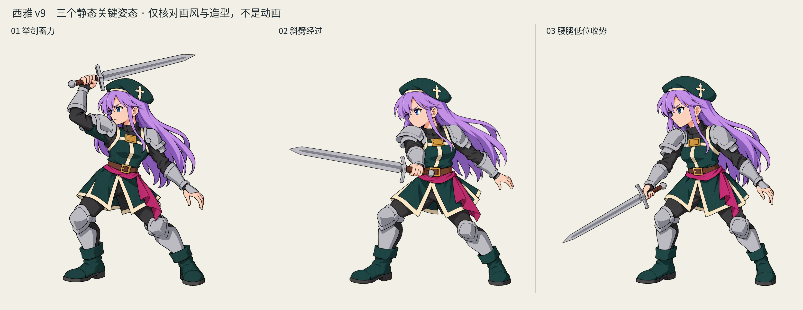
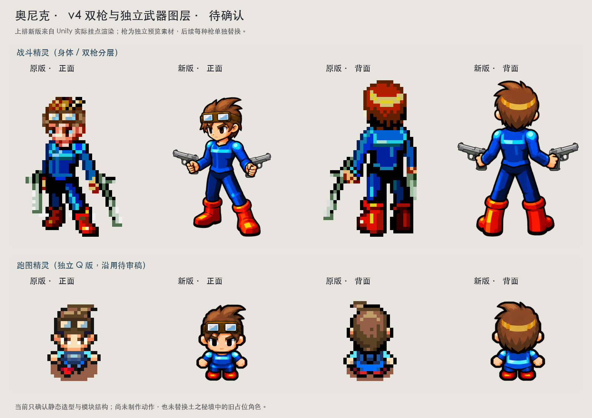
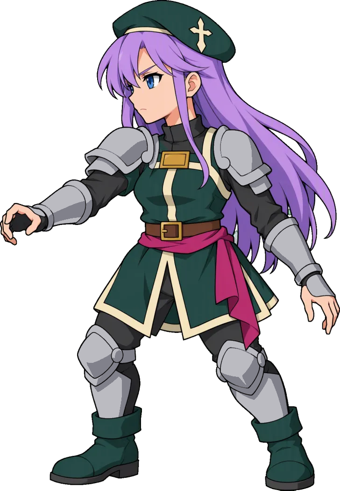
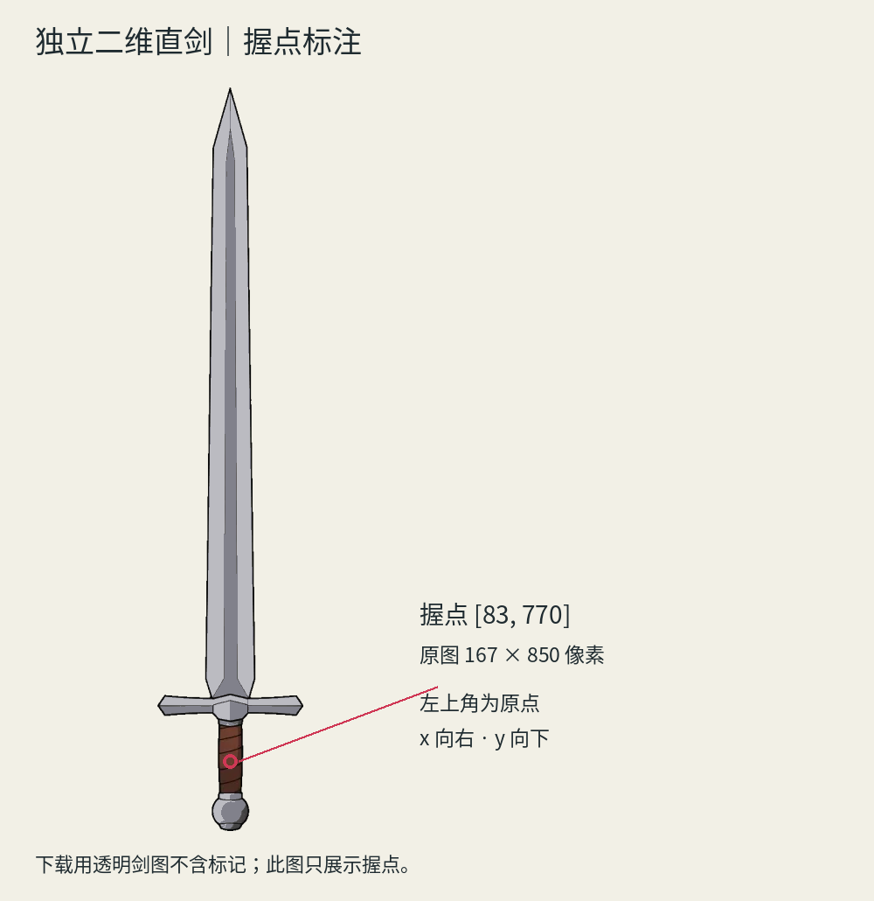

原版依据：像素头像与 Q 版跑图

原包未找到可确认的西雅完整战斗身体；本页骑士服装的全身结构仍是重制补全。高清战斗与 Q 版跑图独立，Q 版资源本轮未改。
v8 已被用户退回：人物有三维渲染观感。本页展示重新绘制的二维候选和三个静态动作姿态，检查轮廓、色块与角色身份。三张姿态没有拼接成动画。

长比例、体积明暗与盔甲反光偏离二维角色语言。保留历史，不作为认可基线。

清晰轮廓线、较短比例、平涂紫发和绿色衣服，银灰盔甲以色块表达。身体与独立剑分别保存。
姿态是新生成的独立原画，用于观察高位、挥出和收势时的造型；尚不能证明整段剑路或动作连续性。

原包未找到可确认的西雅完整战斗身体；本页骑士服装的全身结构仍是重制补全。高清战斗与 Q 版跑图独立，Q 版资源本轮未改。

图上旧标题保留制作时状态；主角 v4 后续明确认可已记录在角色档案。西雅尚未获得认可。

作者 LuizMelo，来源页（CC0）。本地 GIF 用 80 毫秒/帧分析，非作者游戏时序。原参考剑光只用于识别应排除的效果，不用在西雅上。


独立图层已保存；逐帧武器挂接尚未制作。三个静态姿态含绘制武器。